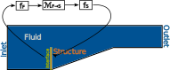
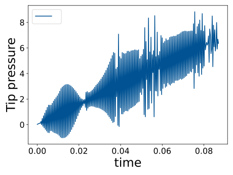
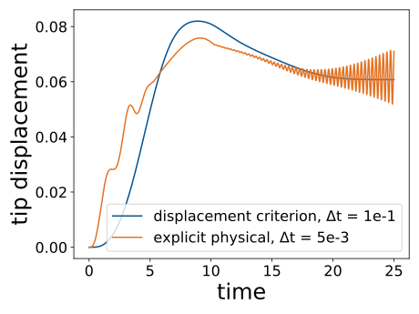

Diverse Time Scales in Multidisciplinary Problems - Challenges in Coupling Procedures and Software Design
Máté Kelemen
Institute for Structural Analysis - Technische Universität Braunschweig
Supervisors: Prof. Dr.-Ing. habil. Roland WüchnerDr.-Ing. Suneth Warnakulasuriya
Motivation
- Valentine Corporation flier
Motivation
- Valentine Corporation flier
- Maurya K. et al.: Review Article on Condition Assessment of Structures Using Electro-Mechanical Impedance Technique
Motivation
- United States Environmental Protection Agency: Meteorological Process Review
Motivation


- United States Environmental Protection Agency: Meteorological Process Review
- Roland Stull: Practical Meteorology
- Wikimedia - Animation of Typhoon Mawar passing just north of Guam
- GrabCad - Wind Field and Pollution Dispersion
Reference Problem

Monolithic Model
Monolithic Model
Monolithic Model
- Theoretically most accurate
- Terrible numerics (badly conditioned matrices)
- Massive computational demand
Partitioned Model
Partitioned Model
Partitioned Model
Partitioned Model
- Better matrix conditioning
- Flexible - standalone solvers for each partition
- Method of coupling is an extra source of errors
Temporal Coupling
Explicit temporal - explicit physical
- Begin from equilibrium
- Solve slow partition
- Interpolate slow partition
- Transfer interpolated to the fast partition
- Solve fast partition
- Transfer and solve
- Transfer and solve
- Transfer to slow partition

Temporal Coupling
Explicit temporal - implicit physical
- Begin from equilibrium
- Solve slow partition
- Interpolate slow partition
- Transfer interpolated to the fast partition
- Solve fast partition
- Transfer and solve
- Implicit physical coupling
Temporal Coupling
Implicit temporal - implicit physical
- Begin from equilibrium
- Solve slow partition
loop
- Interpolate slow partition
- Transfer interpolated to the fast partition
- Solve fast partition
- Transfer and solve
- Implicit physical coupling
Abstractions for Coupling
| Dataset |
|---|
| + data (array) |
| - fetch |
| - assign |
| DatasetTransfer |
|---|
| + source Datasets |
| - transform |
| + target Dataset |

Coupling Instabilities
- No temporal coupling (identical time steps)
- Implicit physical coupling
- Convergence criterion on interface displacement
- Smaller time steps (100 [ms] → 5 [ms])

Coupling Instabilities
- No temporal coupling (identical time steps)
- Explicit physical coupling
- 5 [ms] time step size

Coupling Instabilities
- No temporal coupling (identical time steps)
- Implicit physical coupling
- Convergence criterion on interface forces
- 5 [ms] time step size
- Requires more relaxation
- Requires more coupling iterations
Outlook
- Find a more robust relaxation scheme
- Fallback: existing methods with criteria on residuals
- Develop stable interpolation methods
- Apply temporal coupling to
- FSI with other fluid discretizations (finite volumes)
- other time integration schemes
- other multiphysics problems